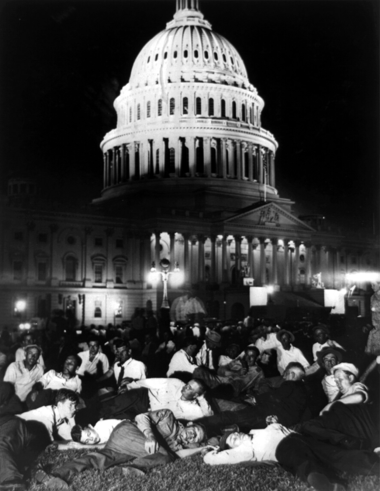

Directions: Study the photograph and the background, then answer the questions.

Background. Congress had voted a service bonus for veterans of the First World War in 1924, payable in 1945. In the summer of 1932 thousands of veterans camped in Washington asking for early payment. Hoover's program for the Depression rested on voluntarism: business, charities, and local government were to carry relief by cooperation, while the federal government encouraged and lent to institutions. The Reconstruction Finance Corporation, created in 1932, lent public money to banks, railroads, and insurance companies.
1. Who are the people in the photograph, what had they come to Washington to ask for, and when had Congress promised to pay it?
2. Explain voluntarism in one or two sentences, naming the three kinds of actors who were expected to carry relief under it.
3. A bank in a farming town is near failure in 1932. Under Hoover's largest program, what help could it receive, from which agency, and what was that help supposed to produce for the town's families?
4. It is December 1932. Roosevelt has won the election and banks are closing state by state. What is the name for this period, and what two facts define it?
1. Who are the people in the photograph, and what did they ask for? The Bonus Army, the veterans of the First World War who camped in Washington in the summer of 1932 demanding early payment of their promised service bonus, and were driven out by federal troops. They asked Congress to pay at once a bonus voted in 1924 and not due until 1945. The photograph shows members on the Capitol lawn on July 13, 1932. (Blueprint 4)
2. Explain voluntarism. Voluntarism was Hoover's policy of meeting the Depression through voluntary cooperation by business, charities, and local government rather than through federal relief programs. Business would hold wages and keep building, charities and cities would feed the hungry, and the federal government would encourage, coordinate, and set the example without paying relief itself. (Blueprint 3)
3. What help could the bank receive, and what was it supposed to produce? The Reconstruction Finance Corporation, the federal agency created in 1932, could lend the bank public money. The design hoped that stability at the top would restore jobs below: a saved bank would lend again to farmers and merchants, credit would return, and families would find work and keep deposits safe. In practice many banks used loans to repair their balance sheets and did not lend, which students may add for full credit. (Blueprint 3 and Blueprint 4)
4. Name the period, and give the two facts that define it. The interregnum, the period between Roosevelt's election in November 1932 and his inauguration in March 1933, when the outgoing and incoming presidents shared responsibility for a deepening crisis and neither acted decisively. Hoover urged joint statements and commitments Roosevelt would not give, Roosevelt refused to bind himself before taking office, and governors closed banks state by state until the banking system had shut down by inauguration morning. (Blueprint 4)
Teacher note. This check is formative. Question 2 is the design diagnostic. Students who can define voluntarism but cannot name its three carriers have the slogan without the program. Question 4 predicts success on the writing task, because it requires the limits side of the same judgment the essay asks students to argue.